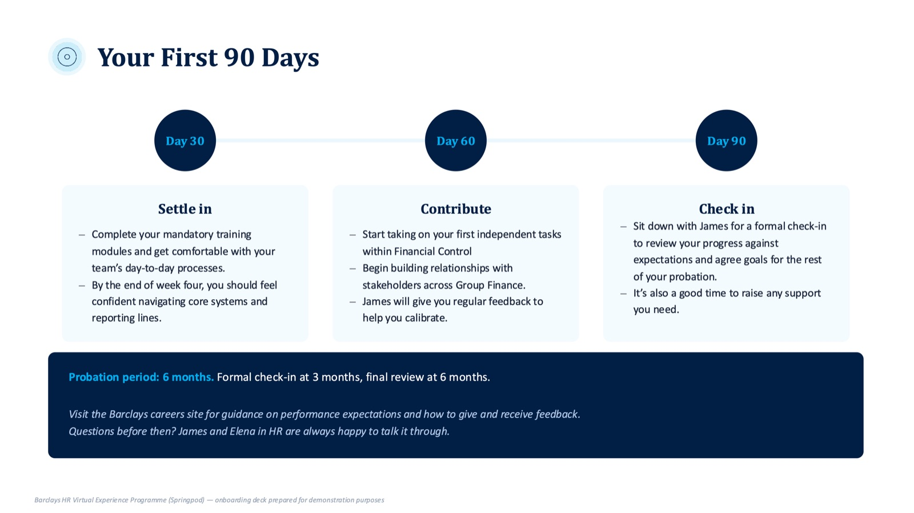
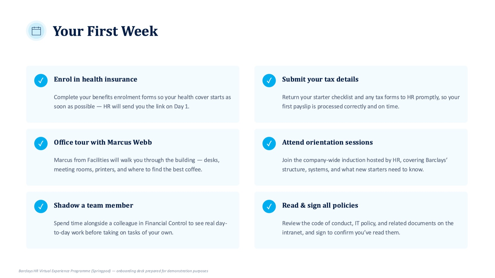
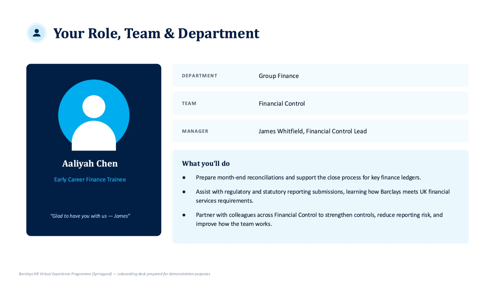

Tiered, so nothing arrives at once
New starters forget most of what they hear on day one. So I split onboarding into tiers, each with a clear focus:
| When | Focus | What happens |
|---|---|---|
| Day 1 | Get set up | Laptop and accounts, IT security training, and meeting her manager and buddy in person |
| Week 1 | Admin and belonging | Benefits and tax forms, signing policies, an office tour, HR orientation and shadowing a colleague |
| Day 30 | Settle in | Mandatory training done; confident with core systems and reporting lines |
| Day 60 | Contribute | First independent tasks, building relationships across Group Finance, and regular feedback |
| Day 90 | Check in | Formal review against expectations and goals agreed for the rest of the 6-month probation |

Four things every new starter needs
- Compliance: IT security training on day one, then the code of conduct and policies to read and sign in week one, plus tax and benefits forms so her first payslip is right.
- Systems: the tools she’ll use, from the finance reporting system to the HR self-service portal, and who to contact when access fails.
- Culture: Barclays’ purpose and five values, a buddy from the year above, and coffee chats with each teammate in her first two weeks.
- Role expectations: her team, her manager and what she’ll actually do, then what “good” looks like at 30, 60 and 90 days.


Why I built it this way
I joined ABB through an early-talent programme, so I know how much the first few weeks shape whether someone feels they belong. I wrote the deck to the new starter by name, gave every step a named person to go to (manager, buddy, HR, facilities), and ended each stage with a clear checkpoint. That way she’s never left guessing what is expected.
The new starter, team and contacts are fictional, created for the exercise.